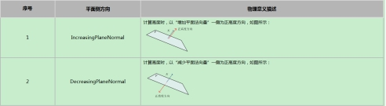

Trong đo lường 3D, công cụ đo chiều cao chủ yếu dùng để lấy khoảng cách chiều cao từ các điểm không gian ba chiều trong vùng quan tâm của tập điểm đầu vào hoặc ảnh độ sâu đến mặt phẳng chuẩn chỉ định, đồng thời hoàn thành thống kê các thông tin chiều cao như biểu đồ histogram chiều cao, giá trị nhỏ nhất, giá trị lớn nhất, giá trị trung bình, trung vị, độ lệch chuẩn, phần đuôi thấp và phần đuôi cao, giúp người dùng thu được phân bố khoảng cách chiều cao chính xác hơn.
| Phân loại | Tên tham số | Mô tả tham số |
|---|---|---|
| Cửa sổ thuộc tính | Bật tính toán tập điểm ba chiều | Chọn “Có”, trong chuỗi tham số sẽ hiển thị tham số đầu vào tập điểm ba chiều, và sử dụng tập điểm ba chiều này để đo chiều cao. |
| Hướng mặt phẳng | Chia thành hai loại：phía tăng vector pháp tuyến là hướng chiều cao dương và phía giảm vector pháp tuyến là hướng chiều cao dương. |
|
| Loại ROI | Vùng cần kiểm tra, chia thành 7 loại：toàn bộ ảnh, hình chữ nhật, hình chữ nhật affine, hình tròn, hình vành khuyên, hình elip, đa giác. | |
| Bật mask | Có bật mask hay không, chọn “Có”, hiển thị các tham số như số lượng mask, số thứ tự mask, hình dạng mask. | |
| Số lượng mask | Thiết lập số lượng mask được bật, phạm vi giá trị là [1, 99]. | |
| Số thứ tự mask | Chỉ mục mask hiện tại cần thiết lập. | |
| Loại mask | Hình dạng mask hiện tại cần thiết lập, chia thành 6 loại：hình chữ nhật, hình chữ nhật affine, hình tròn, hình vành khuyên, hình elip, đa giác. | |
| Phân số phần đuôi thấp | Tham số tỷ lệ dùng để tính phần đuôi thấp, phạm vi giá trị là [0,1], đồng thời tổng phân số phần đuôi cao và thấp nhỏ hơn hoặc bằng 1, tham khảo tham số phần đuôi thấp trong cửa sổ giám sát. | |
| Phân số phần đuôi cao | Tham số tỷ lệ dùng để tính phần đuôi cao, phạm vi giá trị là [0,1], tham khảo tham số phần đuôi thấp trong cửa sổ giám sát, đồng thời tổng phân số phần đuôi cao và thấp nhỏ hơn hoặc bằng 1, tham khảo tham số phần đuôi cao trong cửa sổ giám sát. | |
| Hệ số độ lệch chuẩn | Hệ số độ lệch chuẩn. | |
| Bật bộ lọc phạm vi chiều cao | Chọn “Có”, sẽ lọc dữ liệu chiều cao đã tính theo phạm vi chiều cao, đồng thời hiển thị các tham số giới hạn dưới và giới hạn trên của phạm vi chiều cao. | |
| Giới hạn dưới của phạm vi chiều cao | Giới hạn dưới của phạm vi chiều cao, đồng thời giới hạn dưới chiều cao phải nhỏ hơn hoặc bằng giới hạn trên chiều cao, lọc dữ liệu chiều cao đã tính theo phạm vi chiều cao. | |
| Giới hạn trên của phạm vi chiều cao | Giới hạn trên của phạm vi chiều cao, đồng thời giới hạn dưới chiều cao phải nhỏ hơn hoặc bằng giới hạn trên chiều cao, lọc dữ liệu chiều cao đã tính theo phạm vi chiều cao. | |
| Bao gồm giá trị trong phạm vi chiều cao | Chọn “Có” thì bao gồm các giá trị trong phạm vi chiều cao, nếu không thì loại trừ các giá trị trong phạm vi chiều cao. | |
| Bù hệ số | Bù hệ số cho kết quả đo, thông thường là 1, dùng để bù sai số hệ thống như tạo ảnh. | |
| Bù cố định | Bù cố định cho kết quả đo, thông thường là 0, dùng để bù sai số hệ thống như tạo ảnh. | |
| Giới hạn trên giá trị chiều cao lớn nhất | Phạm vi giá trị là [-100, 100], đồng thời giới hạn dưới phải nhỏ hơn hoặc bằng giới hạn trên. | |
| Giới hạn dưới giá trị chiều cao lớn nhất | Phạm vi giá trị là [-100, 100], đồng thời giới hạn dưới phải nhỏ hơn hoặc bằng giới hạn trên. | |
| Giới hạn trên giá trị chiều cao nhỏ nhất | Phạm vi giá trị là [-100, 100], đồng thời giới hạn dưới phải nhỏ hơn hoặc bằng giới hạn trên. | |
| Giới hạn trên giá trị chiều cao nhỏ nhất | Phạm vi giá trị là [-100, 100], đồng thời giới hạn dưới phải nhỏ hơn hoặc bằng giới hạn trên. | |
| Giới hạn trên giá trị chiều cao trung bình | Phạm vi giá trị là [-100, 100], đồng thời giới hạn dưới phải nhỏ hơn hoặc bằng giới hạn trên. | |
| Giới hạn dưới giá trị chiều cao trung bình | Phạm vi giá trị là [-100, 100], đồng thời giới hạn dưới phải nhỏ hơn hoặc bằng giới hạn trên. | |
| Giới hạn trên giá trị trung vị chiều cao | Phạm vi giá trị là [-100, 100], đồng thời giới hạn dưới phải nhỏ hơn hoặc bằng giới hạn trên. | |
| Giới hạn dưới giá trị trung vị chiều cao | Phạm vi giá trị là [-100, 100], đồng thời giới hạn dưới phải nhỏ hơn hoặc bằng giới hạn trên. | |
| Cửa sổ ảnh | Ảnh độ sâu | Hiển thị ảnh độ sâu cần kiểm tra, hiển thị dưới dạng ảnh giả màu. |
| Vùng kiểm tra | Hiển thị vùng cần kiểm tra trên ảnh. | |
| Vùng mask | Hiển thị vùng cần mask trên ảnh. | |
| Chuỗi dữ liệu | Ảnh độ sâu | Nhập ảnh độ sâu cần kiểm tra. |
| Mặt phẳng chuẩn | Chọn mặt phẳng chuẩn để đo chiều cao. | |
| Biến đổi tuyến tính hai chiều | Biến đổi tịnh tiến, xoay, co giãn của mục tiêu so với template. | |
| Giao diện nâng cao | Không có | Không có |
| Phân loại | Tên tham số | Mô tả tham số |
|---|---|---|
| Cửa sổ giám sát | Dữ liệu ảnh | Chiều dài, chiều rộng và kích thước pixel của ảnh, cũng như tham số dữ liệu độ sâu. |
| Giá trị trung bình | Giá trị chiều cao trung bình của dữ liệu chiều cao. | |
| Trung vị | Sau khi sắp xếp dữ liệu chiều cao, dữ liệu chiều cao nằm ở vị trí giữa. | |
| Giá trị nhỏ nhất | Giá trị chiều cao nhỏ nhất trong dữ liệu chiều cao. | |
| Giá trị lớn nhất | Giá trị chiều cao lớn nhất trong dữ liệu chiều cao. | |
| Phần đuôi thấp | Giá trị chiều cao làm cho lượng dữ liệu nhỏ hơn một giá trị nào đó đạt đến tỷ lệ chỉ định（phân số phần đuôi thấp）. | |
| Phần đuôi cao | Giá trị chiều cao làm cho lượng dữ liệu lớn hơn một giá trị nào đó đạt đến tỷ lệ chỉ định（phân số phần đuôi cao）. | |
| Độ lệch chuẩn | Tức độ lệch chuẩn của dữ liệu chiều cao. | |
| μ+kσ | Giá trị trung bình+k*độ lệch chuẩn, trong đó k là hệ số độ lệch chuẩn. | |
| Số lượng pixel trong bounding box vùng | Số lượng pixel（bao gồm pixel không hợp lệ）trong hình chữ nhật ngoại tiếp nhỏ nhất của vùng quan tâm. | |
| Số lượng pixel quan tâm | Số lượng pixel（bao gồm pixel không hợp lệ）bên trong hình dạng vùng quan tâm. | |
| Số lượng pixel quan tâm khả kiến | Số lượng pixel hợp lệ bên trong hình dạng vùng quan tâm. | |
| Số lượng pixel đã dùng | Số lượng pixel thực tế được dùng để đo chiều cao trong vùng quan tâm. | |
| Kết quả thực thi | Kết quả thực thi công cụ. | |
| Thời gian thực thi | Thời gian thực thi công cụ. | |
| Cửa sổ ảnh | Ảnh đầu ra | Hiển thị ảnh độ sâu đã kiểm tra, hiển thị dưới dạng ảnh giả màu. |
| GUI histogram | Histogram dữ liệu chiều cao | |
| Chuỗi dữ liệu | Giống tham số cửa sổ giám sát, dùng cho các công cụ tiếp theo. |
Step 1 Thiết lập có bật tập điểm ba chiều hay không
Chọn “Có”, trong chuỗi tham số sẽ hiển thị tham số đầu vào tập điểm ba chiều, và sử dụng tập điểm ba chiều này để đo chiều cao；chọn “Không”, trong chuỗi tham số sẽ hiển thị ảnh độ sâu đầu vào, và sử dụng ảnh độ sâu để đo chiều cao.
Step 2 Thiết lập mặt phẳng chuẩn
Thiết lập mặt phẳng chuẩn thực chất là chọn một vùng quan tâm trên ảnh độ sâu để lấy điểm dữ liệu ba chiều, sau đó thực hiện fitting mặt phẳng theo hướng mặt phẳng và phương pháp fitting. Theo mặc định, mặt phẳng chuẩn là mặt phẳng XOY.
Step 3 Thiết lập hướng phía mặt phẳng
Khi thực hiện tính chiều cao, cần xác định hướng đo chiều cao；hướng phía mặt phẳng bao gồm hai loại：IncreasingPlaneNormal và DecreasingPlaneNormal, ý nghĩa vật lý cụ thể của chúng như bảng dưới đây. Giá trị chiều cao thu được theo hai hướng phía mặt phẳng này là hai số đối nhau, do đó mô tả thông tin thống kê cuối cùng tính được cũng khác nhau.

Step 4 Thiết lập vùng đo và mask
Để lấy dữ liệu điểm không gian ba chiều cần thiết lập vùng đo và mask, trong đó hình dạng vùng đo hỗ trợ sáu kiểu thiết lập như hình tròn, hình elip, đa giác, hình chữ nhật, hình chữ nhật affine hoặc đoạn vành khuyên, mask hỗ trợ thiết lập số lượng tùy ý các vùng như hình tròn, hình elip, đa giác, hình chữ nhật, hình chữ nhật affine và đoạn vành khuyên；lúc này, đo chiều cao sử dụng dữ liệu điểm không gian ba chiều bên trong hình dạng vùng đo sau khi loại trừ vùng mask.
Step 5 Thiết lập thống kê histogram
Thiết lập thống kê histogram chủ yếu bao gồm：thiết lập tham số và thiết lập bộ lọc phạm vi chiều cao. Thiết lập tham số là thiết lập ba tham số phân số phần đuôi thấp, phân số phần đuôi cao và hệ số StdDev. Thiết lập bộ lọc phạm vi chiều cao chủ yếu là lọc dữ liệu chiều cao đã tính, có thể chỉ định một phạm vi chiều cao, đồng thời xác định chế độ lọc phạm vi chiều cao là bao gồm giá trị trong phạm vi chiều cao hay loại trừ giá trị trong phạm vi chiều cao.
Step 6 Thực hiện đo và xuất kết quả
Sau khi lấy dữ liệu điểm không gian ba chiều, thực hiện đo có thể thu được dữ liệu chiều cao, đồng thời hoàn thành thống kê thông tin chiều cao, xuất các kết quả như histogram chiều cao, giá trị nhỏ nhất, giá trị lớn nhất, giá trị trung bình, trung vị, độ lệch chuẩn, phần đuôi thấp và phần đuôi cao, cũng như kết quả đếm pixel.
Step 7 Bù và phán định kết quả
Nếu cần bù hoặc phán định kết quả tính toán, có thể thiết lập bù hệ số, bù cố định, căn cứ phán định, giá trị lớn nhất, giá trị nhỏ nhất.
Không có
Tham khảo “\Samples\3D\深度图\3D测量工具.gvp”。